CENTRAL PARK · NYC · SPRING
NYC NEIGHBORHOODS & PARKS
ROLE: PHOTOGRAPHY, CREATIVE
Photography unlocks a world of inspiration by seeing fleeting moments that might otherwise go unnoticed. In this collection, I explore hidden beauty in everyday views, capturing new perspectives and city energy. Rather than mere documentation or nostalgia, photography presents parks and cityscapes as living canvases, and a story through the lens.
This ongoing project represents a personal exploration of New York City, where each image captures a world, often frozen in stillness but powered by the life that always pulses just beyond the frame. These city moments—where culture and form blend—can spark thought and affirmation. Inspired by street photography, mixed with the softness of clean design, each photograph offers a unique glimpse of the artist’s vision, encouraging audiences to form a deeper connection with this timeless city, thereby enriching their experience and instilling a lasting impression.
FEATURED PHOTOGRAPHY
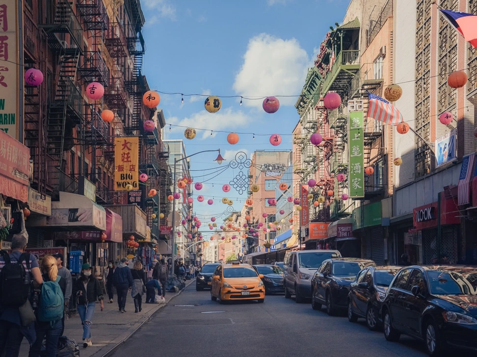 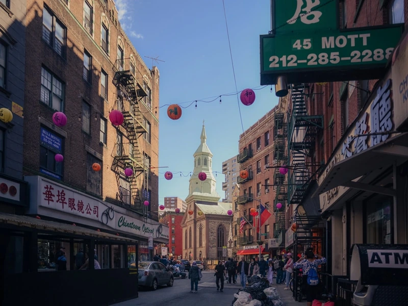 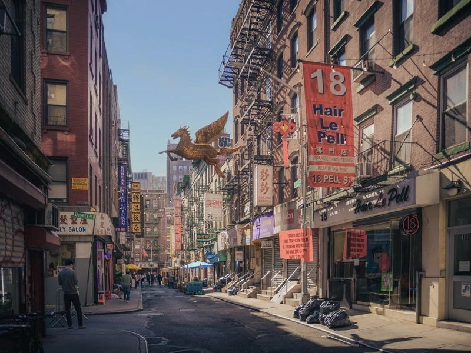
Chinatown, Summer 2020.
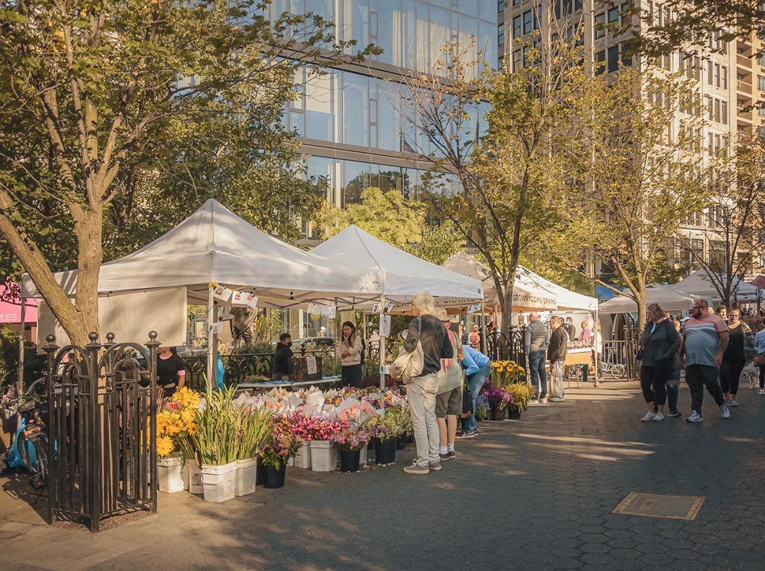 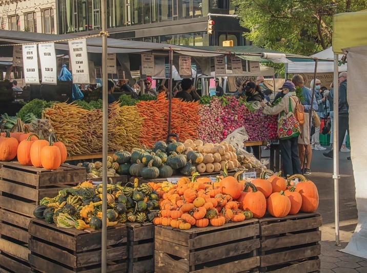 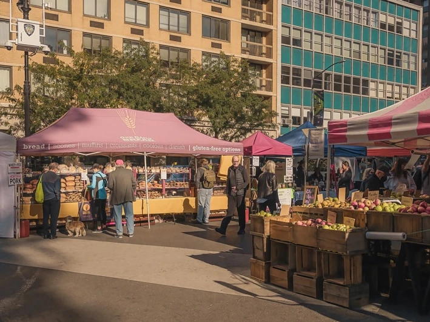Union Square, Fall 2021.
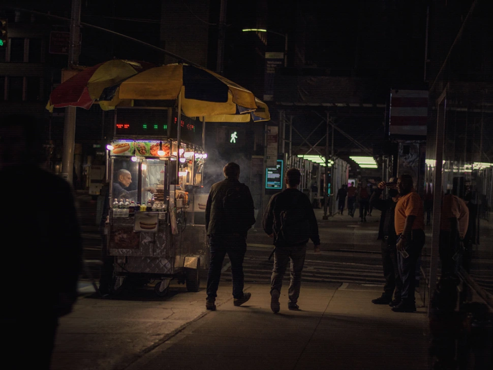 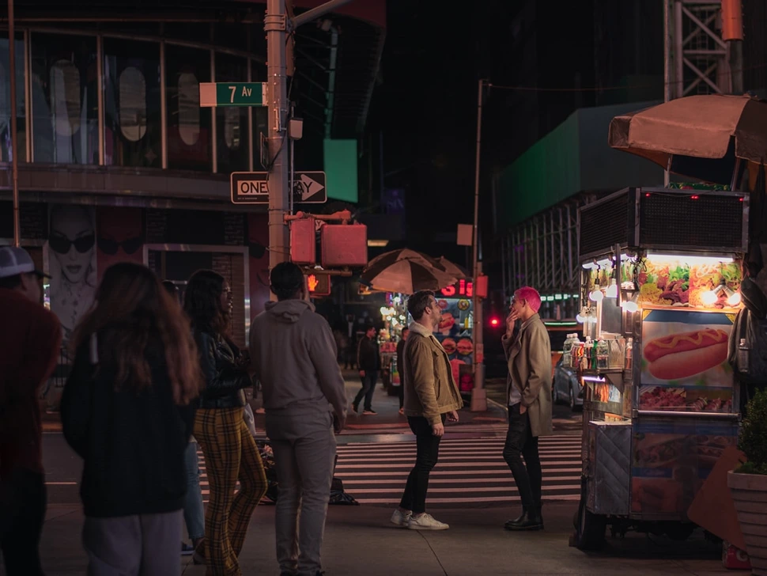 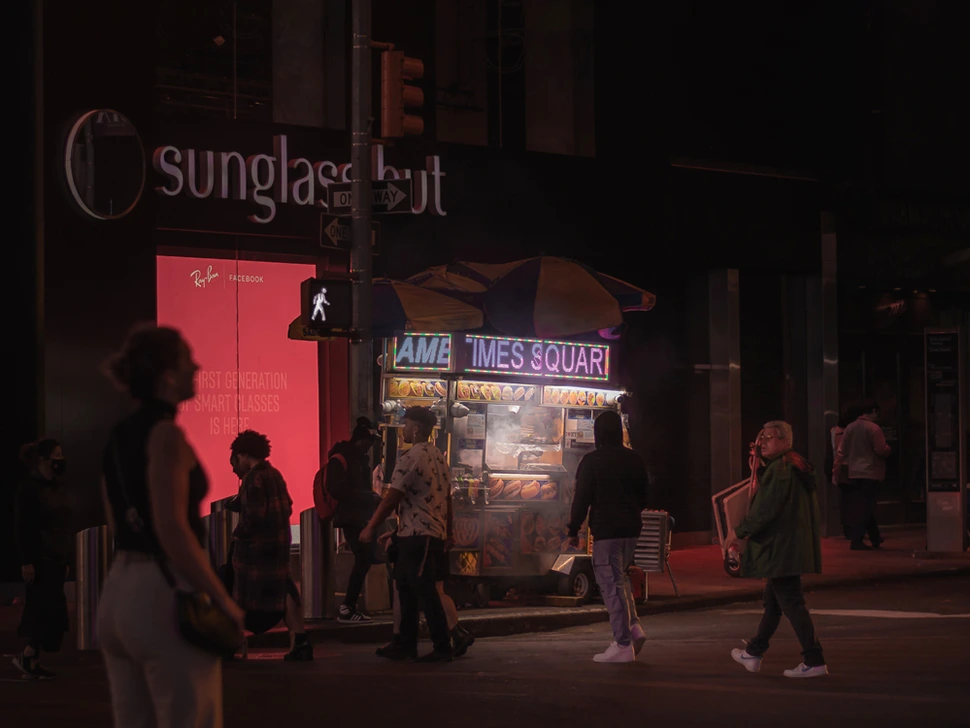Times Square, Spring 2022.
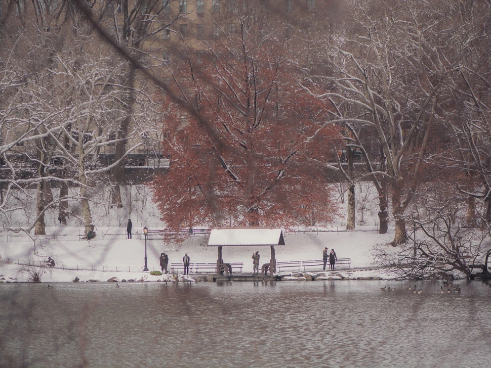 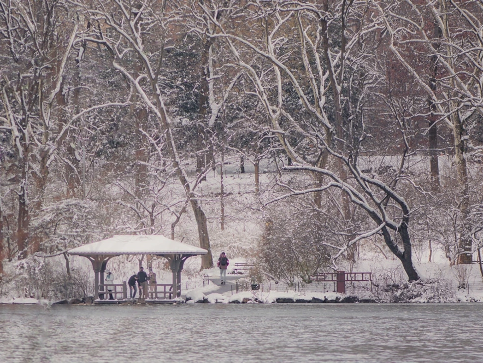 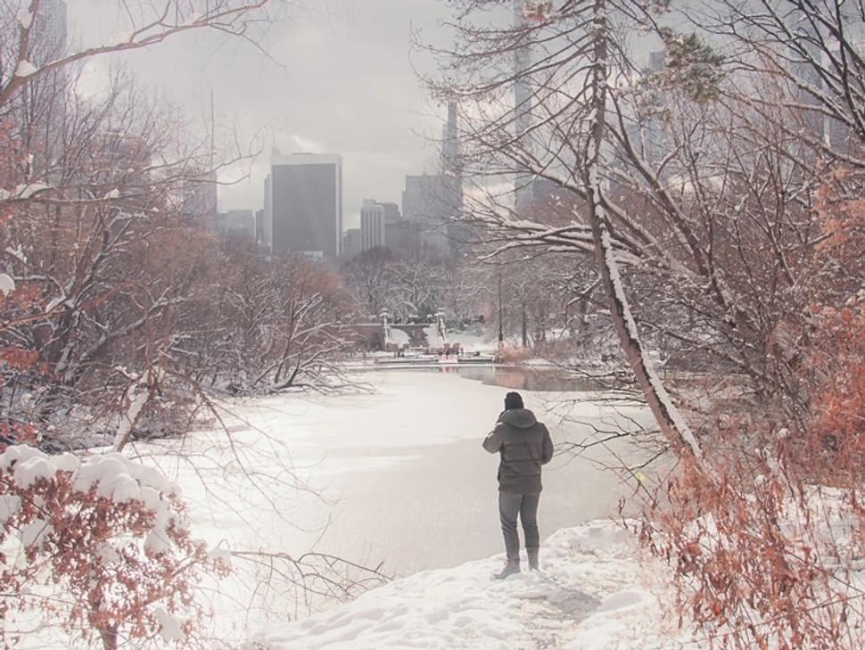Central Park, Winter 2022.